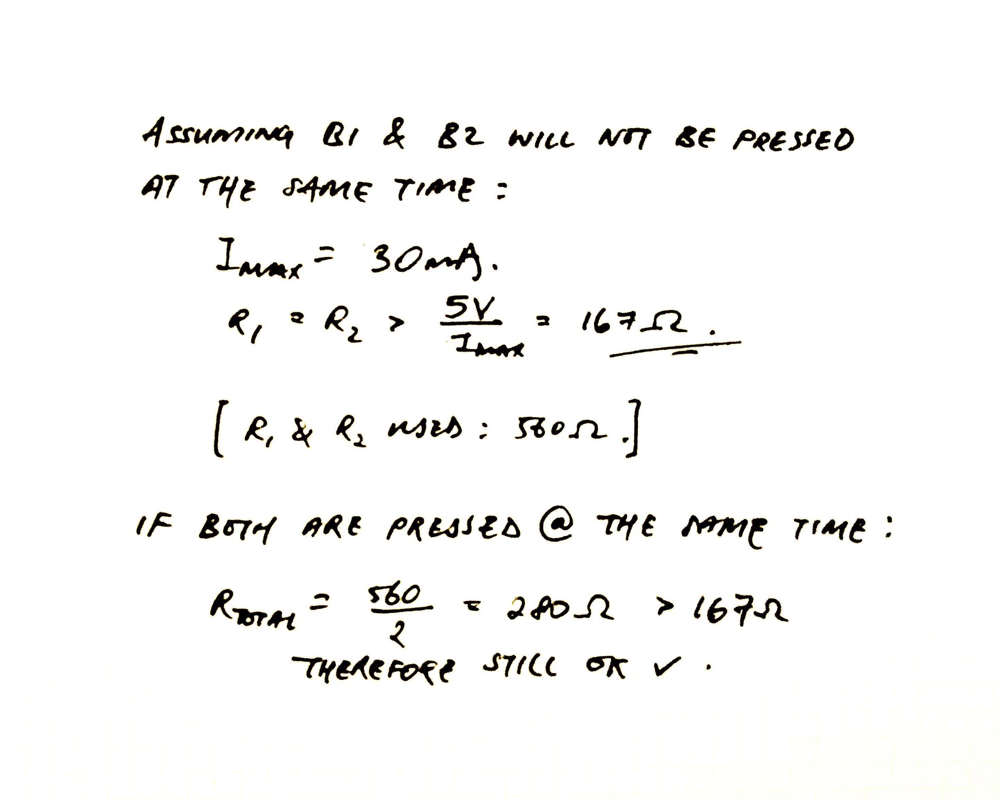
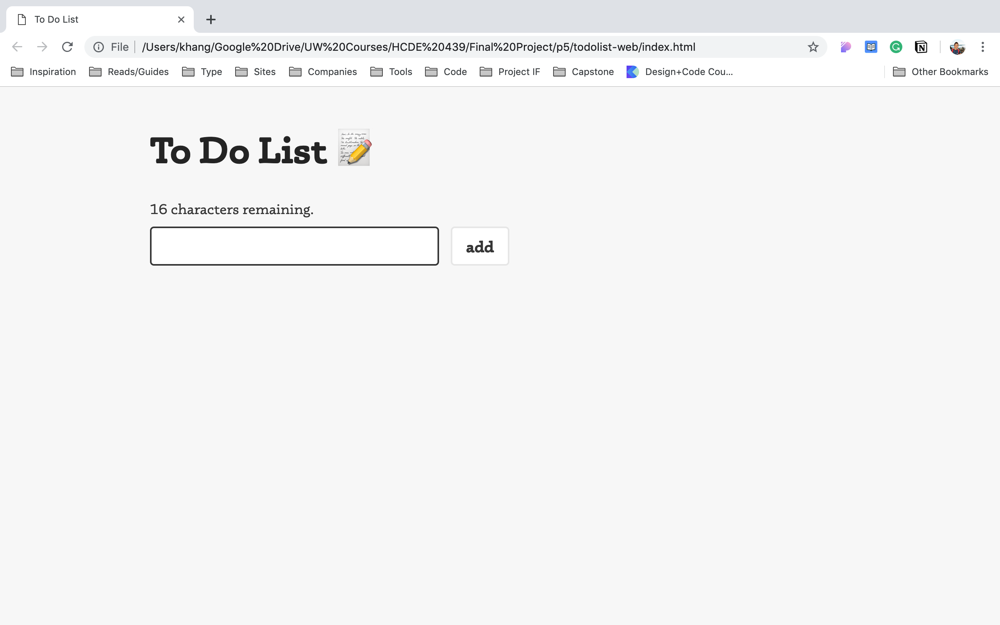
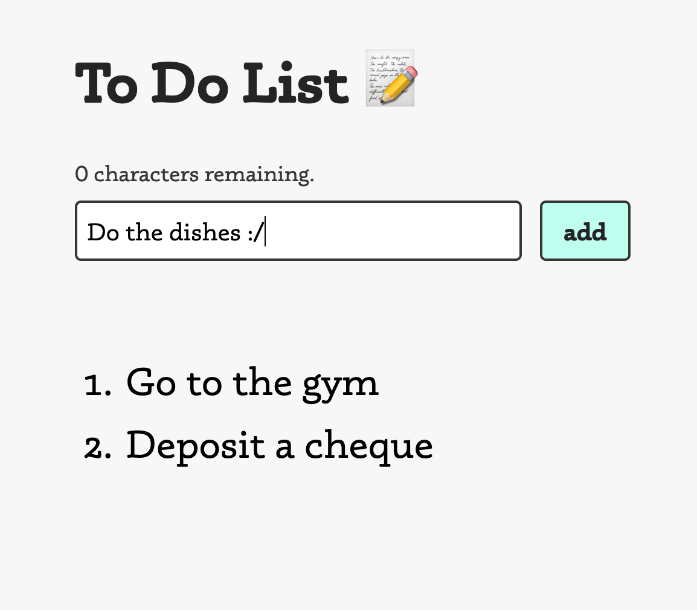
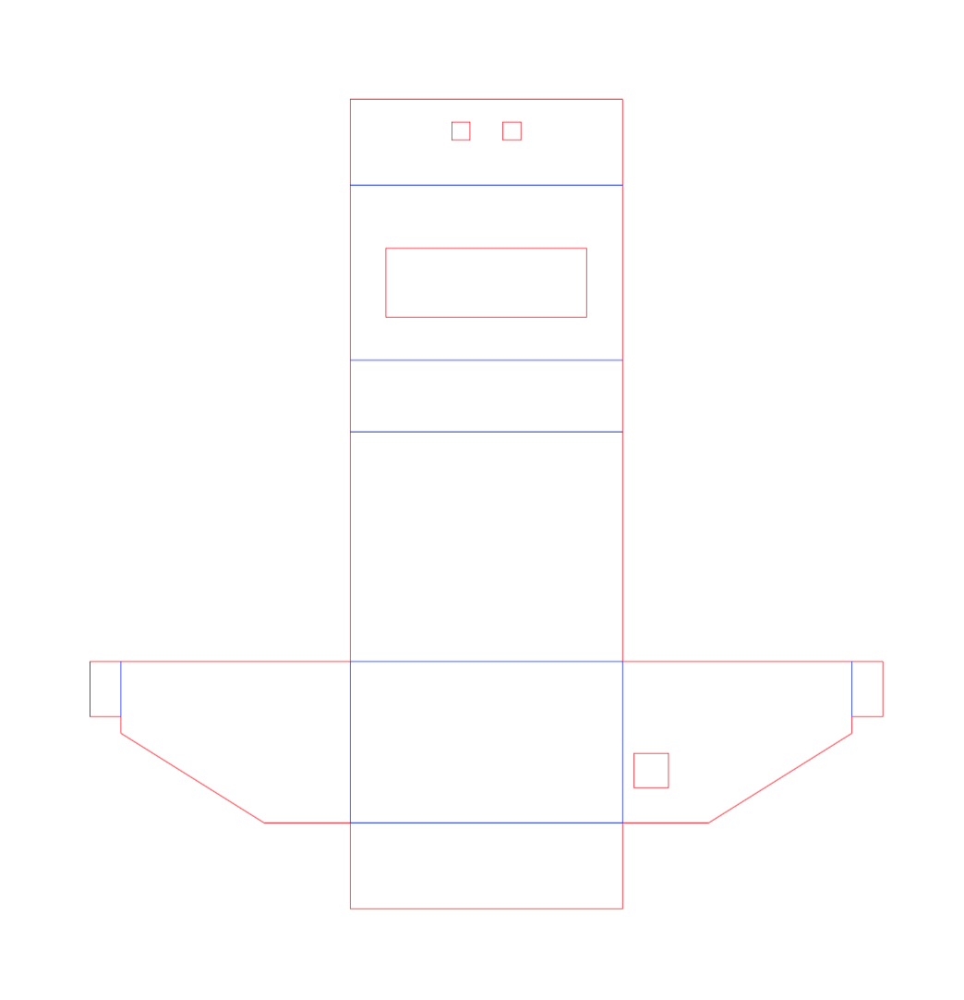
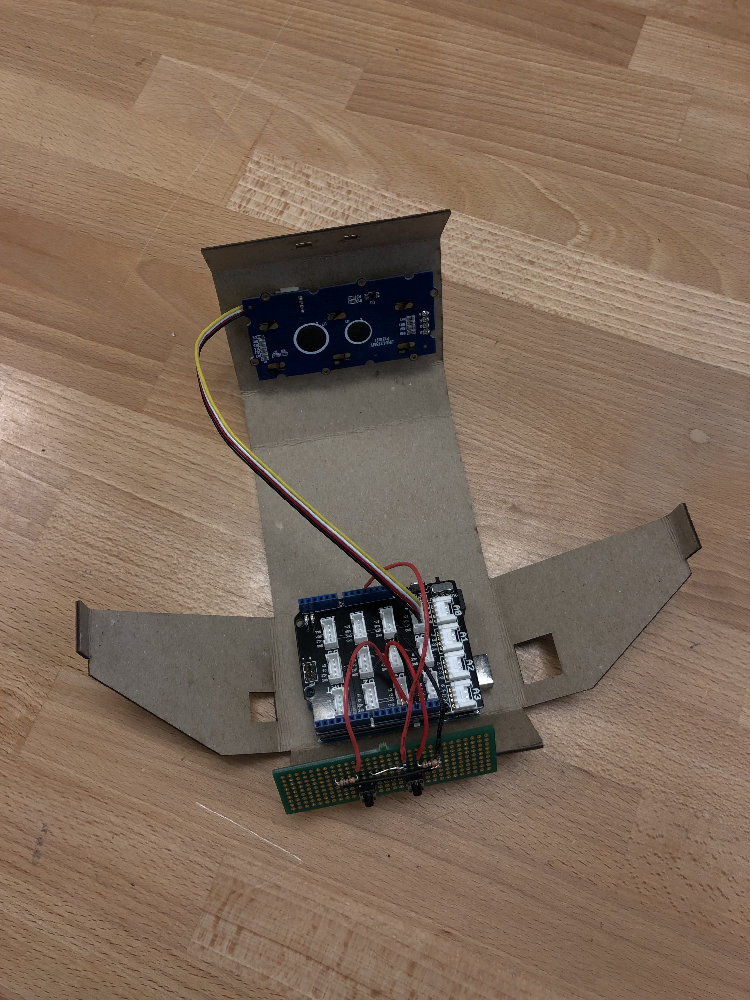

Concept
The motivation for this project came from my an inspiration to have a physical object that helps me keep track of my daily routines rather than from an app hidden on my phone/laptop. This product involves an arduino that displays the items on an LCD and communicates via serial with a locally hosted webpage.


Schematic
The schematic for this project is relatively simple. There are only two switches on board, one to traverse between action items, and the other to check of action items. The LCD used in this project uses a shield that supports the I2C protocol and hence provides the pins for the SDA and SCL connections. The buttons part of the circuit is soldered onto a PCB.
The I/O pins can only take a maximum current of 30mA. Given that the device is designed to have the buttons pressed seperately (not at the same time), the resistors for each button should be at least 167 Ohms. However, if the buttons were both pressed at the same time, the total resistance of R1 and R2 should also be above 167 Ohms. With that in mind, 560 Ohm resistors are used such that when both buttons are pressed at the same time, the resulting resistance (560 / 2 = 280 Ohms) would still be greater than 167 Ohms.



Webpage
I built a webpage as the main interactive interface to add new action items. Each action is limited to 16 characters (due to width limit of LCD). You can find the html and css file here.


sketch.js File
The sketch file facilitates the communication of the webpage and the arduino through serial. The sketch is in charge of creating and deleting li elements through the p5 functions createElement() and remove() respectively. Created elements are placed into DOM through the p5's parent() function.
The sketch actively listens to the serial port but occasionally reads a bunch of zeros when the arduino isn't sending anything. To work around this, I decided to avoid the value 0 entire as a communication signal such that when zero is received, it is ignored. The value 1 is used as a "boot up" signal such that when it is sent from the arduino, the sketch file sends the current array of action items. If a value greater than 1 is received, this means that the arduino is trying to remove an action item where the index of the action item is simply the value received minus 2.
"use strict";
const ABS_MAX = 15; // Maximum number of to-dos that you can create.
let serial; // variable to hold an instance of the serialport library.
let portName = '/dev/cu.usbmodem14101' // rename to the name of your port.
let button, input; // button and input are used as pointers to the text field and submit button
let upper; // upper keeps track of the number of todos in the array.
let todoArr = [], todoDisp = []; // todoArr stores the strings of todos, todoDisp stores the html li objects created
function setup() {
// Serial connection setup
serial = new p5.SerialPort(); // make a new instance of the serialport library
serial.on('list', printList); // set a callback function for the serialport list event
serial.on('connected', serverConnected); // callback for connecting to the server
serial.on('open', portOpen); // callback for the port opening
serial.on('data', serialEvent); // callback for when new data arrives
serial.on('error', serialError); // callback for errors
serial.on('close', portClose); // callback for the port closing
serial.list(); // list the serial ports
serial.open(portName); // open a serial port
// Create Character Counting label
createElement('p',"16 characters remaining.").parent("char-count");
// Create Input Field
input = createInput(); // create input HTML element
input.id("textfield"); // set css id of input field
input.parent("form"); // nest the text field inside the form div
// Create Button
button = createButton("add"); // create button HTML element
button.id("addbutton"); // set css id of button
button.parent("form"); // nest the button inside the form div
button.mousePressed(createNewItem); // set an event listener for the button
upper = 0; // set the initial number of todos to 0.
}
// Creates a new todo item based on the input field only if:
// item is not an empty string and the maximum amount of todos hasn't been reached
function createNewItem() {
let item = input.value(); // retrieve string from input field
if ((item != "") && (item != " ") && (todoArr.length <= ABS_MAX)) {
todoArr[upper] = item; // append new item into array
// console.log(todoArr);
serial.write(stringifyArray()); // send the new array to arduino.
upper++; // increment the number of items.
displayToDos(); // display the new array of items.
}
// refresh input field and char count on webpage
input.value("");
document.getElementById("char-count").innerHTML = "16 characters remaining.";
}
// Removes all of the li DOM elements created previously and
// recreates new li DOM elements based on updated array.
function displayToDos() {
todoDisp.forEach(obj => obj.remove()); // remove all li elements on display.
for (let i = 0; i < upper; i++) { // create new li elements from the array and nest it within the ol element.
todoDisp[i] = createElement("li",todoArr[i]).parent("list");
}
console.log("mapped: " + todoDisp);
}
// Checks the serial for data from the arduino.
// If 1 is received, reset the arduino with the todolist in the webpage.
// If a value greater than 2 & less than upper + 2 is received, remove
// If the value is at least upper + 2, the arduino is refreshed with the todolist in the webpage.
// 0s are ignored as they're occasionally sent through serial from unavoidable synchronicity issues.
function serialEvent() {
if (serial.available()) { // if the info is being sent through the serial.
let value = parseInt(serial.readLine()); // retrieve data from seriald as an int.
console.log("value: " + value);
if (value == 1 || value >= upper + 2) { // if the value is 1 or greater than the no. of todos in the webpage
serial.write(stringifyArray()); // write array to arduino
} else if (value > 1) { // if value is greater than 1 (a todo item is completed)
value -= 2; // change the value back to an index
if (value < upper - 1) { // if index is not at the end of the array
for (let i = value; i < upper; i++) { // shift each element to the left.
todoArr[i] = todoArr[i+1];
}
}
todoArr.pop(); // pop out the last element (which is undefined).
(upper > 0) ? upper-- : upper = 0; // decrement upper.
displayToDos(); // display the new todos
}
}
}
// Sets Enter key as an input method.
function keyPressed() {
if (keyCode == 13) createNewItem(); // 13 is the Enter key.
}
// Updates the char count above the text field and restrict the user from inputting more than 16 chars.
function keyReleased() {
let count = 16 - input.value().length; // set count to be the remaining number of chars available.
if (count < 0) { // if there are no more available chars
input.value(input.value().substring(0,16)); // restrict the string in the text field to 16.
count = 0; // keep count at 0.
}
// update char count on webpage
document.getElementById("char-count").innerHTML = count + " characters remaining.";
}
// Creates a string of all of the todolist items from the array.
// Each string is 16 characters long. If the sentence is shorter than 16 sentence,
// it is padded with spaces at the end.
function stringifyArray() {
let arrStr = ""; // create an empty string
if (todoArr.length > 0) { // if there's sth in the array
todoArr.forEach((el) => { // append each todo to the string
if (el) arrStr += el.padEnd(16, " "); // pad todo with spaces up to 16 chars
});
} else { // if there aren't any items
arrStr = " "; // set as a single space
}
return arrStr; // return the string
}
// console logging functions for serial protocols
const printList = (portList) => portList.forEach((element, index) => print("["+index+"] "+element));
const serverConnected = () => print('connected to server.');
const portOpen = () => print('the serial port opened.');
const serialError = (err) => print('Something went wrong with the serial port. ' + err);
const portClose = () => print('The serial port closed.');
.ino File
For the arduino code, the device boots up with the setup function and sends a 1 to the webpage to fetch current action items on the web(as mentioned before). Then for each loop, the arduino checks the serial for new data, checks the inputs from the buttons, and increments the timer (which turns off the LCD backlight after about 1 minute).
The sketch file sends the entire array of action items every time and the arduino breaks it down into 16 character chunks and stores them into the array, replacing the old array (see checkSerial() function).
#include <Wire.h> // include the Wire.h library
#include "rgb_lcd.h" // include lcd library
const int ABS_MAX = 15; // Max number of todo items.
const int SWITCH = 12; // set constant for SWITCH pin.
const int ENTER = 13; // set constant for ENTER pin.
const String WELCOME = " To Do List"; // set constant for welcome message
rgb_lcd LCD; // instantiate an LCD object.
int cursor; // instantiate a cursor variable to keep track of cursor.
int upper; // instantiate a variable to keep track of the number of todos.
int timer; // instantiate a variable to keep track of the time passed.
String toDos[ABS_MAX] = {}; // instantiate an array with a maximum
String index;
void setup() { // setup code to run once:
Serial.begin(9600); // initialize serial communications at 9600 baud.
pinMode(SWITCH, INPUT); pinMode(ENTER, INPUT); // set pins as inputs
cursor = 0; upper = 0; // instantiate cursor and upper at 0
LCD.begin(16, 2); // set up the LCD's number of columns and rows
LCD.setRGB(255, 255, 255); // set background color of LCD
displayLCD(WELCOME, 0, 0, false); // print welcome message
delay(2000); // delay the welcome message by 2 sec
Serial.println(1); // signal sketch.js to send the todo items from the webpage.
}
void loop() { // loop code to run continuously:
if (timer > 600) LCD.setRGB(0, 0, 0); // if counting timer is approx after 1 min, turn off LCD backlight
checkSerial(); // check the serial from input
if (upper == 0) displayLCD("--- No Tasks ---", 0, 1, true); // if there are no tasks, write no tasks on screen
if (digitalRead(SWITCH)) { // if switch is clicked
timer = 0; // reset the counting timer
if (upper == 0) { // if there are no todos
LCD.setRGB(0, 255, 0); // set LCD backlight to green
} else {
LCD.setRGB(255, 255, 255); // set LCD backlight to white
traverseToDo();
}
} else if (digitalRead(ENTER)) {
timer = 0; // reset the counting timer
if (upper == 0) { // if there are no todos
LCD.setRGB(0, 255, 0); // set LCD backlight to green
} else {
LCD.setRGB(255, 255, 255); // set LCD backlight to white
removeToDo(); // remove a todo item
}
}
timer++; // increment counting timer;
delay(100); // delay by 100 ms to slow down the loop.
}
// Checks the serial for todo items from the webpage and refreshes the arduino
// with the new todo items.
void checkSerial() {
if (Serial.available()) { // if theres data in serial
String item = Serial.readString(); // read the entire string from serial
if (item.length() > 1) { // if the string isn't a single character
for (int i = 0; i < item.length() / 16; i++) {
toDos[i] = item.substring(16*i, 16*(i+1)); // split the string into 16 chars each and save them
}
}
upper = item.length() / 16; // set the upper as the total no. of 16 char strings
cursor = (upper > 0) ? upper - 1 : 0; // set cursor as the last todo item
LCD.setRGB(255, 255, 255); // set LCD backlight to white
displayToDo(cursor); // display the todo item at cursor
timer = 0; // reset counting timer
}
}
// Goes through the todo list items.
void traverseToDo() {
(cursor == upper - 1) ? cursor = 0 : cursor++; // increment to cursor to the next todo item
displayToDo(cursor); // display the new todolist
while (digitalRead(SWITCH)) {/* Used to prevent multiple increments per press */}
}
// Removes a todo list item and updates the cursor and upper variable.
void removeToDo() {
Serial.println(cursor+2); // send cursor + 2 to webpage
toDos[cursor] = ""; // remove todo item from array
if (cursor < upper - 1) { // if cursor is not the index of the last item
for (int i = cursor; i < upper; i++) {
toDos[i] = toDos[i + 1]; // shift each element to the left.
}
cursor++; // increment to cancel out the decrement below
}
cursor--; // decrement the cursor
upper--; // reduce the total number of todo items
LCD.setRGB(0, 255, 0); // set LCD backlight to green
displayLCD("DONE", 12, 0, false); // display done on top right corner of screen
delay(1000); // delay the done screen by 1 sec
LCD.setRGB(255, 255, 255); // set LCD backlight back to white
displayToDo(cursor); // display previous todo item
while (digitalRead(ENTER)) {/* Used to prevent multiple deletes per press */}
}
// Displays a todo item at a given index i with the index at the top row and the todo item at the bottom.
void displayToDo(int i) {
String index = String(i + 1) + "of" + String(upper); // convert index to a string
displayLCD(index, 0, 0, true); // display the index at the top with refresh
displayLCD(toDos[i], 0, 1, false); // display the todo item at the bottom without refresh
}
// Displays a text on the LCD with given coordinates (col and row) with the option to clear the screen.
void displayLCD(String text, int col, int row, boolean clear) {
if (clear) LCD.clear(); // clears the screen if clear is true
LCD.setCursor(col, row); // set the cursor of the LCD
LCD.print(text); // print the text on the LCD
}
Casing
The casing is built by creating a packaging dieline on Adobe illustrator using red to indicate cut lines and blue to indicate crease lines. A laser cutter was then used to cut it out. Components were secured onto dieline and the flaps were taped in place.

